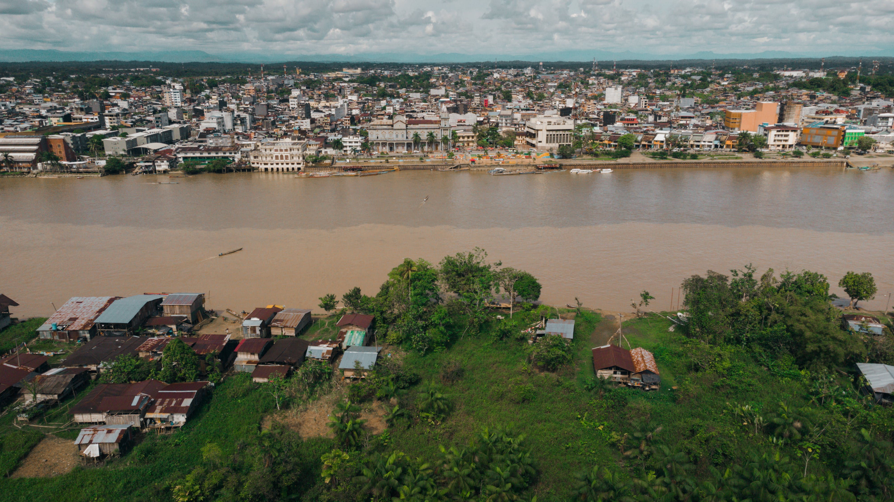
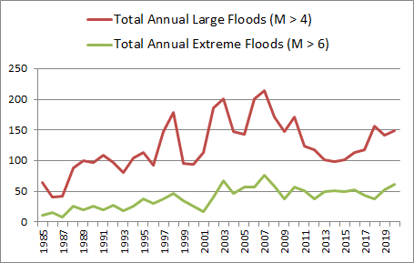
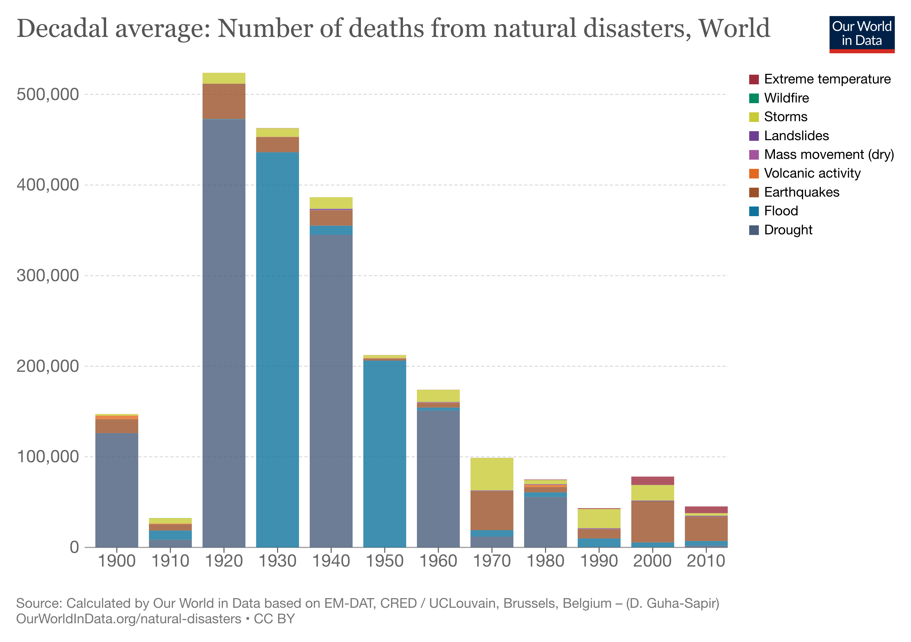

Our Mission
Our mission is to educate and empower communities worldwide to effectively prepare for, respond to,
and recover from floods. Through accessible information, proactive advocacy, and collaborative
partnerships, we aim to raise awareness about flood risks, promote sustainable solutions, and
support vulnerable populations. By fostering resilience, facilitating dialogue, and advocating for
equitable policies, we strive to reduce the impact of floods on lives and livelihoods. Our
commitment to innovation, inclusivity, and continual improvement drives us to empower individuals
and organizations with the knowledge and tools needed to build more resilient communities in the
face of evolving environmental challenges.
Our Services
Our services include educational resources on flood risks and preparedness, community forums for
sharing experiences and support, and emergency preparedness kits tailored for flood scenarios. Users
can access local flood risk assessments, schedule consultations with experts, and participate in
volunteer opportunities. We offer online training workshops covering floodplain management and
insurance, as well as subscription services for real-time emergency alerts during flood events. Our
goal is to empower individuals and communities with the knowledge, tools, and support needed to
mitigate flood risks and build resilience in the face of environmental challenges.
Our Policy
Some key policies addressing floods in India include the National Flood Commission (established in
1954) to study and manage floods, the National Water Policy (updated in 2012) focusing on flood
management, and the National Disaster Management Plan (2016) emphasizing flood risk reduction and
preparedness. Additionally, the National Flood Plain Zoning Atlas project identifies flood-prone
areas for better land use planning. The National Disaster Response Force (NDRF) coordinates rescue
and relief during floods, and initiatives like the National Mission for Sustainable Agriculture
(NMSA) promote climate-resilient farming to mitigate flood impacts.
What is Flood?
A flood is an overflow of water (or rarely other fluids) that submerges land that is usually dry.In the
sense of "flowing water", the word may also be applied to the inflow of the tide. Floods are an area of
study of the discipline hydrology and are of significant concern in agriculture, civil engineering and
public health. Human changes to the environment often increase the intensity and frequency of flooding,
for example land use changes such as deforestation and removal of wetlands, changes in waterway course
or flood controls such as with levees, and larger environmental issues such as climate change and sea
level rise. In particular climate change's increased rainfall and extreme weather events increases the
severity of other causes for flooding, resulting in more intense floods and increased flood risk.
Data & Statistics
Exact figure of loss of lives is unknown, but it is estimated between 1800 and 2500 people. In 1987,
Bihar state of India witnessed one of its worst floods till then. Flood occurred due to overflow of the
Koshi river; which claimed lives of 1,399 humans, 302 animals and public property worth INR ₹68 billion
(US$850 million).


